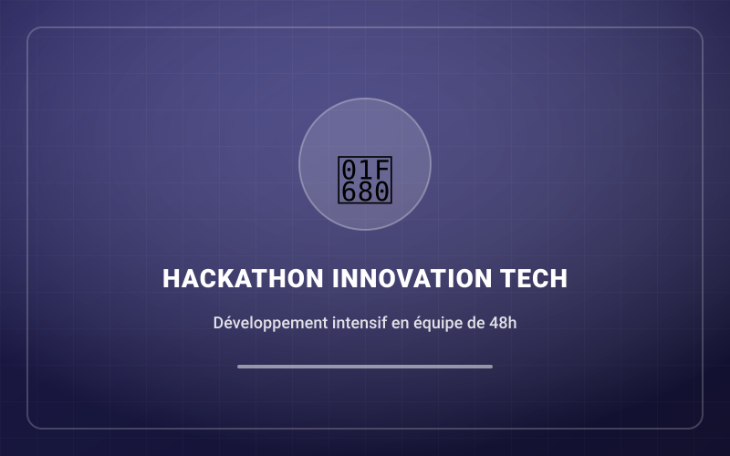
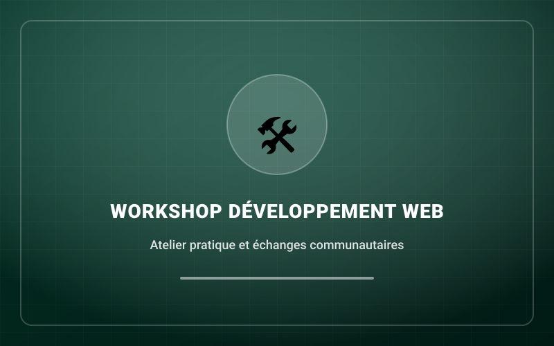

Bonjour, bienvenue sur mon Portfolio
Étudiant passionné d'informatique, développeur et créateur multimédia. Je conçois des applications web modernes, des identités visuelles percutantes et des productions audiovisuelles dynamiques.
15+
Projets Réalisés
5+
Technologies Maîtrisées
4+
Certifications & Événements

Mon Parcours Scolaire
Découvrez mon cheminement académique, ma filière d'études, mes domaines de prédilection ainsi que mes ambitions d'avenir.
Filière & Établissement
Institut / Université des Sciences & Technologies
Étudiant en Informatique & Génie Logiciel. Formation approfondie couvrant l'algorithmique, les bases de données, l'architecture logicielle et le développement web moderne.
- Niveau : Licence / Cycle d'Ingénieur en Informatique
- Spécialisation : Développement Web & Systèmes d'Information
Domaines d'Intérêt
Toujours en quête d'approfondissement technique, je concentre mes recherches et projets sur les technologies à fort impact :
- Développement d'applications web interactives et scalables
- Conception d'interfaces utilisateurs intuitives (UI/UX)
- Intelligence Artificielle appliquée et automatisation
- Génie logiciel et bonnes pratiques de programmation
Objectifs Académiques
Ma vision est de concilier une solide rigueur théorique avec une pratique terrain continue à travers des projets concrets.
- Obtention de diplôme avec excellence académique
- Réalisation de projets de fin d'études innovants
- Poursuite continue de certifications professionnelles reconnues
- Évolution vers un rôle d'Architecte Logiciel et Lead Developer
Expériences Professionnelles & Stages
Un aperçu des missions en entreprise, des responsabilités assumées et des compétences techniques éprouvées.
Stagiaire Développeur Web & Multimédia
Domaine d'activité : Agence digitale spécialisée dans la création de solutions web et la communication visuelle.
- Participation au développement et à la refonte de portails web responsives en HTML, CSS, JavaScript et PHP.
- Création de supports graphiques (affiches, bannières, maquettes de présentation) pour les clients de l'agence.
- Optimisation des performances et amélioration de la compatibilité multi-écrans (mobiles, tablettes, ordinateurs).
- Montage de capsules vidéo promotionnelles courtes pour les réseaux sociaux.
Développeur & Concepteur Graphique Freelance
Domaine d'activité : Prestations de services informatiques, création de sites vitrines et design de marques.
- Conception de logos, chartes graphiques complètes et identités de marque pour commerces et entrepreneurs.
- Création de sites vitrines dynamiques avec formulaires de contact et catalogues de produits.
- Montage et habillage dynamique de vidéos pour chaînes YouTube et comptes TikTok.
- Accompagnement des clients dans la gestion de leur présence numérique.
Ma Passion pour le Numérique
L'informatique et les nouvelles technologies ne sont pas qu'un domaine d'étude pour moi, c'est une véritable vocation créative au quotidien.
Programmation & Code
Résoudre des problèmes complexes par des lignes de code élégantes, structurées et performantes est une stimulation continue.
Développement Web
Transformer des idées abstraites en applications web interactives, accessibles et esthétiques pour des utilisateurs réels.
Design Graphique
Explorer les couleurs, la typographie et la composition visuelle afin de donner vie à des identités de marque mémorables.
Montage Vidéo
Raconter des histoires dynamiques par le rythme du montage, les effets sonores et les animations en motion design.
Nouvelles Technologies
Veille constante sur l'évolution de l'intelligence artificielle, des frameworks modernes et des tendances du futur numérique.
Création Numérique
Bâtir des projets de A à Z avec enthousiasme, de la première esquisse jusqu'au déploiement et à la mise en ligne.
Événements Technologiques
Hackathons, conférences, ateliers et rencontres tech auxquels j'ai participé pour apprendre, collaborer et relever des défis.

Hackathon 48HHackathon Innovation Numérique
Défi collaboratif de 48 heures chronométré axé sur la création d'une solution numérique pour faciliter la gestion des services d'urgence et le partage de données en temps réel.
 Conférence
Conférence
Forum International du Numérique & IA
Grand rassemblement réunissant des leaders technologiques, chercheurs et ingénieurs autour de l'impact de l'intelligence artificielle générative et de l'automatisation en Afrique.

Atelier PratiqueWorkshop Dév Web & Sécurité Applicative
Atelier intensif avec travaux pratiques sur la mise en place d'architectures web robustes, la gestion des sessions utilisateur sécurisées et l'optimisation des performances SQL.